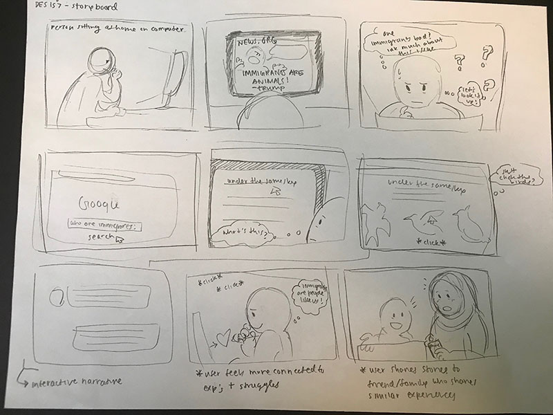

Storyboard
For this storyboard, the setting was in a potential user's home where they are on their computer and sees anti-immigrant/xenophobic rhetoric online. This person realizes that they don't really have a lot of knowledge about immigrants and their experiences, and decided to Google search "who are immigrants?" The user would then come across the project I created and explore its features. The user would then read all the stories and become immersed into the narratives that immigrant women have to share. This user would feel a connection and shares the project with other people/aquaintances who may be interested in this platform and would like to contribute to the stories archived in the project. A few thoughts I had while making this storyboard were that I needed to create an emotional yet constructive connection with users so that they can feel like they can empathize with some of these women's struggles while also encouraging them to take action. Some feedback I got from this storyboard is that the user would need to have an immersive experience with the project in order to feel more drawn to the stories it shares. In addition, there should be a way for users to share the project via social media to make it easier to share the project and its message.
